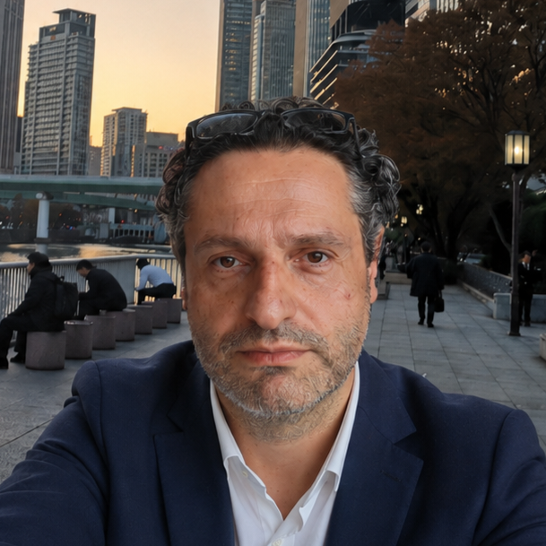

Konstantin Botev
Author | Policy Analyst | International Exhibitions | Systems Research

Konstantin Botev is a Bulgarian author and policy analyst working across institutional continuity, long-term state viability, civilizational memory, speculative fiction, material-form theory, and constraint-based models of emergence.
This website serves as a public author reference and project archive. It is not a full CV, institutional profile, or personal blog. Its purpose is to identify and contextualize selected original texts, frameworks, manuscripts, and research programmes.
Professional Background
Konstantin Botev’s professional background includes public administration, international exhibitions, SME internationalisation, economic diplomacy, tourism policy, EU-funded project coordination, and crisis-response coordination.
He currently works in the field of international promotion of Bulgarian enterprises and has been involved in Bulgaria’s participation in major global platforms, including Expo 2025 Osaka.
This professional background informs, but remains separate from, his independent analytical and authorial work. The views and frameworks presented on this website are independent and do not represent institutional positions.
Core Projects
MNEMOSYNE
Literary science fiction manuscript / Book One completed / in revision
MNEMOSYNE is a literary science fiction project about civilizational memory, archive systems, institutional forgetting, recovery, and the fragile human capacity to understand evidence already present in the world.
The project follows a civilization that does not simply discover a hidden truth, but slowly recovers the ability to interpret the traces, objects, records, rituals, and questions that have surrounded it for generations. Its central concerns are continuity, memory, evidence, responsibility, and the difference between preservation and understanding.
Structure and Emergence: Lithogenism and Form
Theoretical manuscript / sculptural methodology / in development
Structure and Emergence: Lithogenism and Form develops Lithogenism as a methodological framework for figurative stone sculpture. The central idea is not merely that material influences form, but that stone structure, internal signal, resistance, fracture, density, and geological history can participate in the interpretive formation of the sculptural work.
The framework aims to formalize material-sensitive sculptural practice into an explicit, documentable, and later testable protocol. It treats the sculptor not as an absolute imposer of form, but as an interpreter working with constraints, signals, and emergent possibilities already present within the material.
Continuity Index Framework
Policy diagnostic framework / working paper and handbook versions
The Continuity Index Framework is a diagnostic model for observing gradual institutional erosion under continuity deficits. It treats continuity as a latent capacity that can be approximated through structured proxies, including government duration, administrative stability, governance quality, and policy survival.
The framework is not presented as a predictive or causal model. Its purpose is diagnostic: to make slow failure, policy interruption, administrative drift, and erosion without collapse more visible in contexts where direct continuity data are fragmented or absent.
Bulgaria 2126
Long-horizon policy essay / state viability model
Bulgaria 2126 is a long-horizon analytical model of state viability under demographic, territorial, institutional, economic, and continuity stress. It examines how a state may remain formally present while losing adaptive capacity, territorial coherence, human capital density, and institutional continuity over time.
The project uses Bulgaria as a case through which broader questions of state capacity, demographic contraction, regional imbalance, administrative continuity, and public-system viability can be examined over a century-scale horizon.
The Constraint-First Hypothesis
Research hypothesis / mathematical and philosophical framework / in development
The Constraint-First Hypothesis explores whether constraints may be treated as structurally prior to objects, metric relations, and spatial organization. The project investigates whether stable constraint networks can generate persistent structural regimes, basin-like behavior, path dependence, and emergent metric-like order.
The framework is divided into distinct interpretive layers: mathematical modelling, formal research hypothesis, philosophy of physics interpretation, and cosmological speculation. Only the first two layers are treated as defensible research layers; broader physical or cosmological interpretations remain explicitly speculative.
Publications, Archives, and Identifiers
ORCID:
0009-0005-8963-8047
Zenodo:
selected DOI records listed below
SSRN:
selected working papers listed below
LinkedIn:
professional profile
Selected Working Papers and Public Texts
Bulgaria 2126: A Model of State Viability Under a Deficit of Continuity
Working paper / Zenodo DOI / SSRN / 2026
DOI: 10.5281/zenodo.19662131
Zenodo record
SSRN abstract page
Signal and Structure: On Transmission Failure in Complex Systems
Conceptual note / Zenodo DOI / SSRN / 2026
DOI: 10.5281/zenodo.19921920
Zenodo record
SSRN abstract page
Economic Concentration and Human Capital Geography in Bulgaria (2021–2026)
Policy analysis report / Zenodo DOI / SSRN / 2026
DOI: 10.5281/zenodo.19889969
Zenodo record
SSRN abstract page
Additional archived versions, DOI records, project notes, manuscript notices, and publication links will be added here as they become available.
Author Note
All original texts, concepts, frameworks, titles, diagrams, and unpublished manuscripts listed on this website are authored by Konstantin Botev, unless otherwise stated. Drafts, working papers, and project descriptions may be revised, expanded, archived, or replaced by later public versions.
This page is intended to provide a stable public reference for attribution, context, and project continuity. It does not grant permission to reproduce unpublished manuscripts, full drafts, diagrams, or extended project materials without explicit authorization.
Contact
Contact information will be added later.